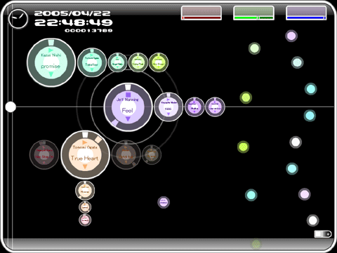

Note to Apple - Innovation Happens Elsewhere too
Everyone I know is pretty jazzed about the new iPhone. It is a pretty nice looking device. I was excited to hear that it was running OS X - perhaps we'd finally have an iPod with an SDK - an iPod that we could write software for. Alas, that is not the case - only Apple can put applications on the iPhone. Sure, Apple is the master of design but there are lots of really interesting ideas about new ways to interact with a music collection. Wouldn't it be nice if we could put these interfaces on an iPod? Here are some nifty ones:
Update - Cory's comparison of the iPhone to a roach motel is quite apt.
Musicream

Music Rainbow

Musicovery:

Radio Protector
Electronic Boom

TuneGlue

Search Inside the Music